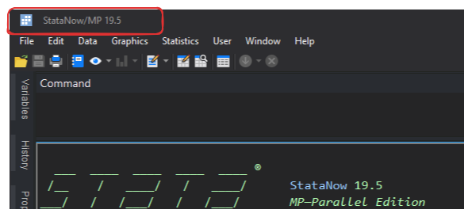

6 SetUp Vscode to work with Stata
6.1 Install VScode and Stata Extensions
Open “Company Portal” app on your computer.
Search for VS Code and install it.(Make sure Git Credential Manager is selected)
Search for GitForWindows and install it.
Open VS Code → Extensions (left sidebar), and install:
- Stata Enhanced (syntax highlighting).
- Git Graph (visualize branches).
- GitLens (blame/insight).
- GitHub Pull Requests and Issues.
- GitHub Copilot (optional).
- GitHub Copilot Chat (optional).
6.2 Configure rundo and rundolines
All the information in this section is based on Friedrich Huebler’s article. If you need more detail, see his blog.
For convenience, we also mirror the files here: https://github.com/GPID-WB/Pip-Technical-Guidelines/raw/refs/heads/main/_data/rundofiles.zip
Extract the ZIP into
C:\ado\personal. You’ll see six files; you only need to modify two of them:rundo.inirundolines.ini
Open
rundo.iniandrundolines.iniand set:statapath→ full path to your Stata EXE, e.g.:statapath = "C:\Program Files\Stata19\StataMP-64.exe"statawin→ exact Stata window title, e.g.:statawin = "Stata/MP 19.5"statacmd→ shortcut that focuses Stata’s Command window (default is^1= Ctrl+1).
The two INIs should be identical except for the filename. Keep both updated.
6.2.1 Recommended .ini tuning (for snappier runs)
These delays are safe and faster than the defaults:
[Delays]
clippause = 60 ; ms after copying selection to clipboard (40–80 is a good range)
winpause = 120 ; ms between window ops (80–140 is a good range)
keypause = 0 ; ms between keystrokes to StataIf you ever get a “nothing happened” run, bump winpause up by ~20–40 ms.
Checklist
- Make sure the window title matches exactly (minor version changes matter).
- Keep Stata open before your first send (cold attaches are slower).
6.3 Set up User Tasks (global, once) to call rundolines / rundo
We use User Tasks so you don’t have to repeat this per workspace.
- Open Command Palette (
Ctrl+Shift+P) → type: Tasks: Open User Tasks. - Paste this JSON (adjust paths to match your machine). NOTE:
- Use double backslashes
\\in paths. - If
"tasks"already exists, just add the two task objects inside the array.
{
"version": "2.0.0",
"tasks": [
{
"label": "Stata: Run selection/line (rundolines)",
"type": "shell",
"command": "\"C:\\ado\\personal\\rundolines.exe\""
},
{
"label": "Stata: Do current file (rundo)",
"type": "shell",
"command": "\"C:\\ado\\personal\\rundo.exe\"",
"args": ["\"${file}\""]
}
]
}- rundolines sends the current selection (or current line if nothing is selected).
- rundo runs the entire file (saves first).
6.4 Bind your keyboard shortcuts (global, once)
- Open Command Palette (
Ctrl+Shift+P) → type: Keyboard Shortcuts → select: Open Keyboard Shortcuts (JSON). - Add (or adapt keys if you already use F9/F10 or if you don’t want to use F9/F10):
- Houbler suggests not use any shortcut with the key
Ctrlas it may get “stuck”.
[
{
"key": "f9",
"command": "workbench.action.tasks.runTask",
"args": "Stata: Run selection/line (rundolines)",
"when": "editorTextFocus && (resourceExtname =~ /\\.(do|ado|mata)$/)"
},
{
"key": "f10",
"command": "workbench.action.tasks.runTask",
"args": "Stata: Do current file (rundo)",
"when": "editorTextFocus && (resourceExtname =~ /\\.(do|ado)$/)"
}
]- The when clauses limit these keys to Stata files.
- If you already mapped F9/F10 to something else, either change those or pick different keys (e.g.,
f8/f9).
Tip: If you still have Code Runner installed, remove any bindings that clash (search “Run Code” in Keyboard Shortcuts and delete its keybindings). You can also disable/uninstall Code Runner entirely—you don’t need it.
6.5 (Optional) Running Mata files directly
Two clean options; pick one.
6.5.1 A) Wrapper .do (recommended for standalone .mata files)
Create .vscode/_run_mata.do in your repo (or anywhere stable):
// _run_mata.do
args mfile
mata:
mata clear
mata do "`mfile'"
endAdd a User Task to invoke it with the current file:
{
"label": "Stata: Mata do current file",
"type": "shell",
"command": "\"C:\\Program Files\\Stata19\\StataMP-64.exe\"",
"args": ["/e", "do", "\"${workspaceFolder}\\.vscode\\_run_mata.do\"", "\"${file}\""]
}And a keybinding for .mata files:
{
"key": "f8",
"command": "workbench.action.tasks.runTask",
"args": "Stata: Mata do current file",
"when": "editorTextFocus && (resourceExtname =~ /\\.(mata)$/)"
}6.5.2 B) Mata blocks inside a .do
Place your Mata code inside a mata: … end block in a .do, then use F9 (selection) or F10 (whole file).
6.6 Quick sanity test (30 seconds)
Open a
.do. Type and select:display "hello from VS Code"Press F9 → Stata should execute the selection.
Press F10 → Stata should run the entire file.
If nothing happens, check:
- Tasks names match your keybinding
argsexactly. - You edited User Tasks (not workspace
.vscode/tasks.json). - No conflicting keybinding is intercepting F9/F10.
6.7 Troubleshooting & Performance
- First run is slower (1–3 s) due to task runner warm-up and first attach. Subsequent runs are often sub-second with tuned INIs.
- If sends are flaky, raise
winpauseslightly (e.g., from 120 → 140 ms). - Verify
statawinmatches the exact window title (minor versions matter). - Keep Stata open; cold-launches add seconds.
- Avoid network paths for ado/working dirs when possible.
- Consider AV exclusions for the Stata EXE,
rundolines.exe,rundo.exe, and your ado/workspace.